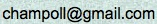

Downloading and Installing
You can download the current student version 2.0.0-beta (December 8, 2013; Change Log)
by clicking the icon for your operating system below. Note that this version is under active development, and is likely
to display unintended behavior at times. It also appears to be incompatible with OS X 10.9 (Mavericks), at the moment.
For Mac and Windows: just download and double-click to start. For Linux: start with
java -jar LambdaCalculator.jar, but make sure you run it with Sun's Java, not GNU libgcj.
You can check which version you have with java -version.
Installing Java
Windows and Linux users will need to make sure they have the Java JRE 1.4 or
newer installed. The Windows version of the calculator will check on startup if Java is installed, and if necessary,
will take the user to a website where Java can be downloaded.
Apple's Java comes pre-installed on Mac OS X 10.6 and below, but this practice was discontinued beginning with OS X 10.7 (Lion).
To get the latest Java 7 from Oracle, you will need 10.7.3 or later. If you already have Java 7 installed, you will see a
Java icon under System Preferences. Java versions 6 and below are listed in the Java Preferences.app located in the
Applications > Utilities folder on your Mac. This page contains
more information on how to install and/or update Java for OS X.
Teacher Edition
The teacher edition, in which tree-derivation exercises can be shown in
a presentation mode that automatically computes denotations of nonterminals,
is available upon request to instructors. Please send an email to:

More Information
Detailed instructions, sample exercises, frequently asked questions, and bug-reports are all available
at this project's Github Wiki. We are
very interested in hearing about your experience with the
Lambda Calculator, and about potential ideas for improvement, so please either head over to the wiki if you have questions
or suggestions, or send us an email.